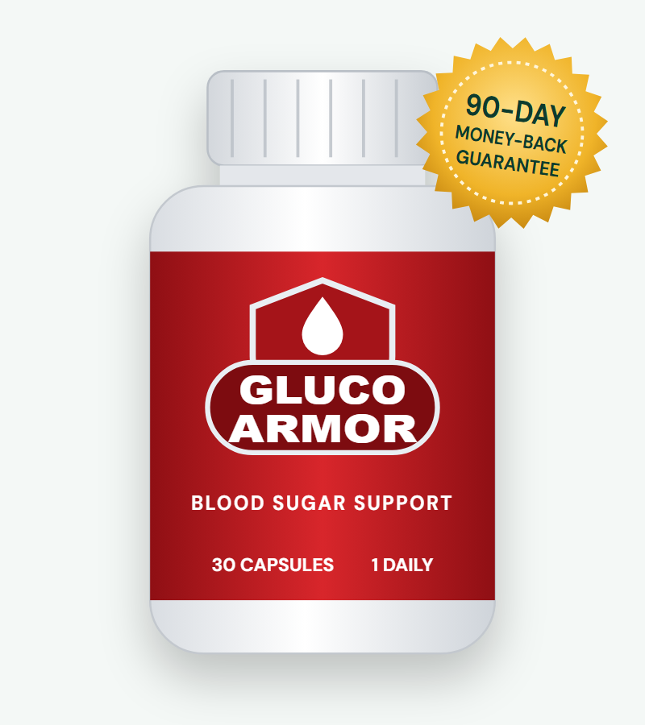
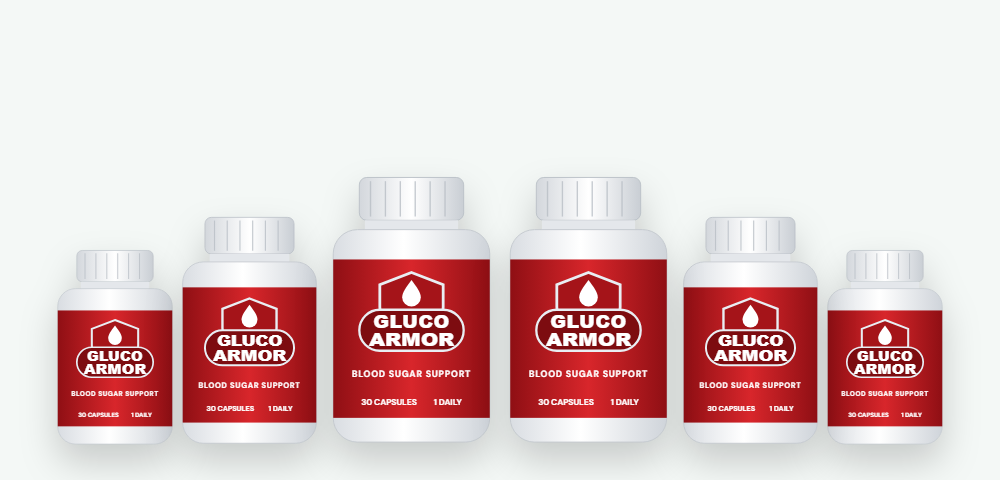

Slower Sugar Absorption
White mulberry leaf contains a compound (1-DNJ) that can slow the breakdown of carbohydrates in the gut, which may soften blood sugar spikes after meals.*
Every ingredient and dose from the label, what the research really shows, and where to buy safely

Gluco Armor is a once-a-day capsule that packs 20 vitamins, minerals and plant extracts into a formula aimed at healthy blood sugar, steady energy and fewer cravings. In this Gluco Armor review we go through the full supplement facts label — with the actual dose of each ingredient — compare it with the research, cover safety, and explain the current price and how to order from the Gluco Armor official website.
Gluco Armor is a dietary supplement for adults who want extra support for healthy blood sugar levels. It comes as capsules — one a day with food — and each bottle lasts a month. The label credits "Gluco Armor Research," and orders are processed by the online retailer BuyGoods.
The Gluco Armor formula is a broad multi-ingredient blend. It combines seven vitamins and minerals (vitamin C, vitamin E, magnesium, biotin, zinc, manganese and chromium) with thirteen plant extracts and nutrients, including banaba, guggul, bitter melon, licorice, cinnamon, gymnema, yarrow, cayenne, juniper berries, white mulberry, vanadium, alpha lipoic acid and taurine.
The vendor promotes Gluco Armor for healthy glucose levels, all-day energy, sharper focus and "natural weight loss." Many of these ingredients appear in other blood sugar formulas because they have at least some research behind them — but as you'll see below, the dose matters as much as the name on the label.
Set your expectations correctly: Gluco Armor is a supplement, not a medicine. It isn't approved to treat diabetes or prediabetes, and it shouldn't replace prescribed treatment, diet changes or regular glucose checks.
The ingredients target three stages of how your body handles sugar.*
White mulberry leaf contains a compound (1-DNJ) that can slow the breakdown of carbohydrates in the gut, which may soften blood sugar spikes after meals.*
Chromium, banaba (corosolic acid), gymnema, cinnamon and alpha lipoic acid are studied for helping cells respond to insulin and take up glucose.*
Vitamins C and E and alpha lipoic acid add antioxidant support, while gymnema is known for briefly dulling the taste of sweetness, which may help with cravings.*
Bitter melon, guggul, juniper, yarrow, cayenne and licorice come mostly from traditional medicine, while biotin, magnesium, zinc and manganese are nutrients involved in normal glucose metabolism. The idea behind Gluco Armor is that many small contributions add up.
The catch is that most botanicals in Gluco Armor are present at 10–50 mg. That's far below the amounts used in most clinical studies, so the overall effect is likely to be gentle rather than dramatic.
Here is the full Gluco Armor supplement facts label, per one-capsule serving.
| Ingredient | Amount | What it's included for |
|---|---|---|
| Vitamin C (ascorbic acid) | 50 mg (56% DV) | Antioxidant support |
| Vitamin E (d-alpha tocopherol succinate) | 10 mg (67% DV) | Antioxidant, energy metabolism |
| Magnesium (oxide) | 125 mg (30% DV) | Insulin signaling; low magnesium is common in people with high blood sugar |
| Biotin | 300 mcg (1000% DV) | Carbohydrate metabolism |
| Zinc (oxide) | 7.5 mg (68% DV) | Insulin storage and release |
| Manganese (chelate) | 1 mg (43% DV) | Enzymes in glucose metabolism |
| Chromium | 0.67 mg (1914% DV) | Insulin sensitivity |
| Banaba leaf extract (1% corosolic acid) | 25 mg | Glucose uptake |
| Guggul resin extract (2.5% guggulsterones) | 50 mg | Lipid and glucose balance (traditional) |
| Bitter melon fruit extract (7.5% bitter principles) | 50 mg | Glucose-lowering compounds |
| Licorice root (4:1) | 50 mg | Traditional tonic |
| Cinnamon bark extract (4:1) | 50 mg | Insulin sensitivity |
| Gymnema sylvestre leaf | 50 mg | Sugar cravings, glucose |
| Yarrow (aerial parts) | 25 mg | Traditional herb |
| Cayenne fruit (40,000 HU) | 10 mg | Metabolism (traditional) |
| Juniper berries | 25 mg | Traditional glucose support |
| White mulberry leaf extract (1% 1-DNJ) | 25 mg | Slower carb absorption |
| Vanadium (vanadyl sulfate) | 0.2 mg | Insulin-like activity (lab studies) |
| Alpha lipoic acid | 30 mg | Antioxidant, glucose uptake |
| Taurine | 25 mg | Metabolic support |
Other ingredients: gelatin (capsule), microcrystalline cellulose, magnesium stearate, rice flour, silica. Gluco Armor does not list berberine, despite claims on some websites.
At 670 mcg, chromium is the best-dosed active in Gluco Armor and sits inside the 200–1,000 mcg range used in studies. Results in trials are mixed, but chromium is the most established mineral for insulin sensitivity.*
Known in India as "sugar destroyer," gymnema can briefly block sweet taste. Studies use roughly 200–400 mg of extract, much more than the 50 mg here.*
Corosolic acid from banaba and 1-DNJ from mulberry leaf have small human studies on post-meal glucose. Both are standardized here, though at low doses.*
Two of the most popular blood sugar herbs. Human studies typically use 1–3 grams a day, so 50 mg each is a token amount.*
ALA is studied at 300–600 mg a day for insulin sensitivity and nerve comfort. Gluco Armor provides 30 mg.*
These nutrients help if you're low in them. The biotin dose is high enough (300 mcg) to affect some lab tests — tell your doctor you take it.*
The sales page calls these "20 proven ingredients." Here's how the Gluco Armor doses compare with the amounts used in studies.
| Ingredient | In Gluco Armor | Typical study dose | Evidence |
|---|---|---|---|
| Chromium | 670 mcg | 200–1,000 mcg | Moderate, mixed results |
| Magnesium | 125 mg | 250–400 mg | Helps mainly if deficient |
| Gymnema | 50 mg | 200–400 mg | Small human trials |
| Cinnamon | 50 mg (4:1) | 1–6 g | Mixed |
| Bitter melon | 50 mg | 1–2 g | Weak to modest |
| White mulberry | 25 mg | 250 mg–1 g | Small post-meal studies |
| Banaba | 25 mg (1%) | 32–48 mg (1%) / 10 mg corosolic acid | Few small trials |
| Alpha lipoic acid | 30 mg | 300–600 mg | Moderate |
| Guggul, juniper, yarrow, licorice, cayenne | 10–50 mg | Not well defined | Mostly traditional or animal data |
Adding 20 ingredients to a single capsule leaves room for only a few hundred milligrams in total, so most of them have to be small. Chromium is the clear exception: Gluco Armor's 670 mcg dose is in the range studied in people. Magnesium is reasonable but modest, and banaba is close to the amounts used in the few trials that exist. Everything else is a fraction of what research used.
The sales page lists studies on mulberry, vitamin E, juniper, guggul, biotin and bitter melon. Those studies test each ingredient on its own, often at much higher doses, and some (like the juniper research) were done in rats. They support the ingredient choices, not the finished Gluco Armor formula, which has no published trial of its own.
The vendor says Gluco Armor supports "natural weight loss." None of the ingredients at these doses has strong evidence for meaningful weight loss. Steadier blood sugar can make cravings easier to manage, but the real drivers of weight change are still diet, activity and sleep.
Our take: Gluco Armor is a sensible, wide-ranging formula with one well-dosed ingredient (chromium) and many token ones. It may give gentle support alongside healthy habits, but the "#1 rated" and "proven" claims go further than the evidence.
Based on its ingredients, these are the main benefits Gluco Armor is designed to support.*
Chromium, banaba, gymnema and mulberry support normal glucose levels already within a healthy range.*
White mulberry and banaba are included for their role in how carbohydrates are absorbed after a meal.*
Fewer highs and crashes can mean fewer afternoon slumps. B-vitamin biotin and magnesium support energy metabolism.*
Gymnema may briefly reduce the taste of sweetness, and steadier glucose can make cravings easier to manage.*
Vitamins C and E and alpha lipoic acid help protect cells from oxidative stress, which rises with high blood sugar.*
One capsule a day, no stimulants listed and a non-habit-forming formula make the routine easy to stick with.*
Using Gluco Armor is simple. Based on the label:
Because the Gluco Armor guarantee lasts 90 days, you have time to judge it honestly with real numbers — fasting glucose or after-meal readings — rather than how you feel on a single day.
Most of the Gluco Armor ingredients are at low doses, and most healthy adults should tolerate it well. Still, a few points deserve attention:
Never stop or reduce diabetes medicine because you've started a supplement. If your readings improve, let your doctor adjust your treatment.
The capsule shell is gelatin, so Gluco Armor isn't suitable for vegetarians or vegans. The label says the product is not for anyone under 18 or for pregnant or nursing mothers.
We looked at the Gluco Armor label, the evidence, the price and the guarantee. Here's our honest assessment.
Gluco Armor is a transparent, easy-to-take blood sugar supplement with a solid chromium dose and a long list of supporting ingredients at smaller amounts. It's a reasonable option for adults who want gentle support on top of healthy habits — not a substitute for diabetes treatment. If you want to try it, buy from the official website so you're covered by the 90-day guarantee, track your glucose readings, and decide based on the numbers.
Visit the Gluco Armor Official WebsiteA fair look at what's trustworthy about Gluco Armor and what deserves a closer look.
Overall, Gluco Armor appears to be a real product sold through a real retailer with a working refund policy, so it isn't a scam in the sense of taking money and shipping nothing. The problem, as with many supplements in this category, is the gap between the marketing and the science. Go in expecting modest support rather than a cure, and you'll be far less likely to be disappointed.
To protect yourself, buy only through the official order page, save your confirmation email, and set a reminder around day 80 so you can request a refund in time if Gluco Armor doesn't help your readings.
How Gluco Armor compares with the most common alternatives.
| Option | How it works | Typical cost | Main downside |
|---|---|---|---|
| Gluco Armor | 20 vitamins, minerals and botanicals in one daily capsule | $49–$79 per month | Most herbs at low doses; modest effects |
| Single-ingredient supplements | Chromium, berberine or cinnamon at study doses | $10–$30 per month each | Narrower; quality varies by brand |
| Prescription medicine | Proven drugs such as metformin, prescribed and monitored | Often low with insurance | Needs a doctor; possible side effects |
| Lifestyle changes | Diet, walking after meals, weight loss, sleep | Free to low cost | Takes effort — but has the strongest evidence |
Prescription medicines are proven in large clinical trials. A supplement may support general wellness but isn't a substitute for medical care.
No supplement works on its own — Gluco Armor included. These habits have the strongest research for healthy blood sugar and will make any supplement more likely to help:
Muscles use glucose when they work. A short walk after eating is one of the simplest ways to blunt an after-meal spike.
Vegetables, beans, whole grains, eggs, fish and lean meat slow digestion. Eating them before the starchy part of a meal can lower the spike that follows.
Soda, sweet coffee drinks and juice raise blood sugar faster than almost anything else. Water, unsweetened tea and sparkling water are easy swaps.
Losing even 5–7% of body weight can significantly improve blood sugar in people with prediabetes, according to large diabetes prevention studies.
Short sleep and chronic stress both raise blood sugar through stress hormones. Aim for seven to nine hours of sleep a night.
Regular A1C tests, fasting readings or a continuous glucose monitor show what is actually working — for Gluco Armor and everything else.
High blood sugar often has no symptoms until it has been high for a long time. A supplement can't tell you what your numbers are, so see a doctor before relying on any product if any of these apply:
A doctor can order an A1C and fasting glucose test, check your kidneys and cholesterol, and tell you whether Gluco Armor is safe to take alongside your treatment. Catching rising blood sugar early makes a big difference to long-term heart, kidney, eye and nerve health.
Search for the Gluco Armor official website and you'll find many sites that all claim to be the real store — glucoarmor-en.us, en-us-glucoarmor.us, glucoarmorofficial.com, glucoarmor.org and more. Some list ingredients that aren't on the label or a different guarantee. Here's how to make sure you're buying genuine Gluco Armor:
For the full guarantee and free e-books, order from the Gluco Armor official website.
Each Gluco Armor bottle is a 30-day supply. Every package is covered by the 90-day money-back guarantee.
60-Day Supply · Try Two
$79/bottle
No bonuses
180-Day Supply
$49/bottle
+ 2 free e-books
90-Day Supply · Most Popular
$69/bottle
+ 2 free e-books
Prices checked on the official order page on October 17, 2026 and may change. One-time payment — no subscription.
The 3-bottle and 6-bottle Gluco Armor packages include two digital e-books, available as an instant download.
A guide to everyday habits and food choices that support balanced blood sugar. Useful as a companion to the lifestyle changes listed above.
Recipes for herbal teas aimed at general wellness. A handy way to swap sugary drinks for unsweetened alternatives.
The 2-bottle package doesn't include the bonuses.
The best place to buy Gluco Armor is the official website, which offers the bundle prices, free e-books and the 90-day guarantee. Here's how to order:

Every Gluco Armor order from the official website is covered by a 90-day money-back guarantee, which the vendor calls "No Questions Asked."
That gives you about three months — enough to take Gluco Armor every day and compare your glucose readings before and after. If you're not satisfied, contact the vendor's support team within 90 days of your purchase to request a refund.
Keep your order confirmation, check the return instructions you're given, and start the process well before day 90. The guarantee only applies to orders placed through the official website.
Try Gluco Armor Risk-FreeGluco Armor is a dietary supplement for adults that combines 20 vitamins, minerals and plant extracts — including chromium, gymnema, banaba, bitter melon, cinnamon, white mulberry and alpha lipoic acid — to support healthy blood sugar and energy. It is taken as one capsule a day with food.
Several Gluco Armor ingredients, such as chromium, gymnema, white mulberry and bitter melon, have human research linked to blood sugar, but most are included at doses well below those used in studies, and the finished formula has not been tested in a published clinical trial. It may offer modest support at best and is not a treatment for diabetes.
The vendor's own order page, with checkout handled by the retailer BuyGoods, is where orders are covered by the 90-day money-back guarantee. Many look-alike sites call themselves the Gluco Armor official website, so use a trusted link and check the guarantee before you pay.
On the official order page Gluco Armor costs $79 per bottle for 2 bottles ($158 plus shipping), $69 per bottle for 3 bottles ($207 with free US shipping) and $49 per bottle for 6 bottles ($294 with free US shipping). The 3- and 6-bottle packages include two free e-books. Each bottle is a 30-day supply.
According to the label, adults take one Gluco Armor capsule a day with food. Each bottle holds 30 capsules, enough for one month. Do not exceed the recommended dose.
Possible side effects include stomach upset and, for people who take diabetes medicine or insulin, blood sugar that drops too low. The 300 mcg of biotin can distort some blood tests, and licorice, cinnamon and guggul can interact with certain medicines. Talk to your doctor before taking Gluco Armor if you take any prescription medicine.
Only with your doctor's approval. Several Gluco Armor ingredients may lower blood sugar, and adding them to metformin, insulin or other diabetes medicine could increase the risk of low blood sugar. Never stop or change prescribed medicine on your own.
The vendor says most people feel a difference after the first week and the best results come after about four months of daily use. Supplements like this usually work gradually, so judge results over several weeks with your own glucose readings.
No. Gluco Armor is sold as a one-time payment for the package you choose. The vendor says there are no future charges.
Gluco Armor comes with a 90-day money-back guarantee. If you are not satisfied, contact the vendor within 90 days of purchase for a refund.
Gluco Armor listings appear on Amazon from third-party sellers. Those orders may not include the official package prices, free e-books or the 90-day money-back guarantee, which apply to orders from the official website.
No. Some websites list berberine, but the Gluco Armor supplement facts label does not include it. The label lists 20 ingredients, including chromium, banaba, gymnema, bitter melon, cinnamon and white mulberry.
Get Gluco Armor for as little as $49 per bottle with free US shipping on the 6-bottle package — with two free e-books and a 90-day money-back guarantee.
Order Gluco Armor Now